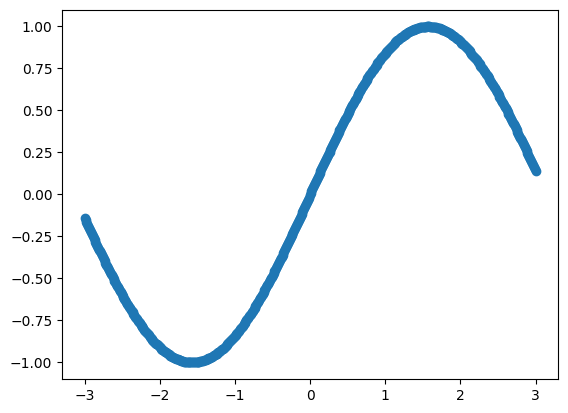
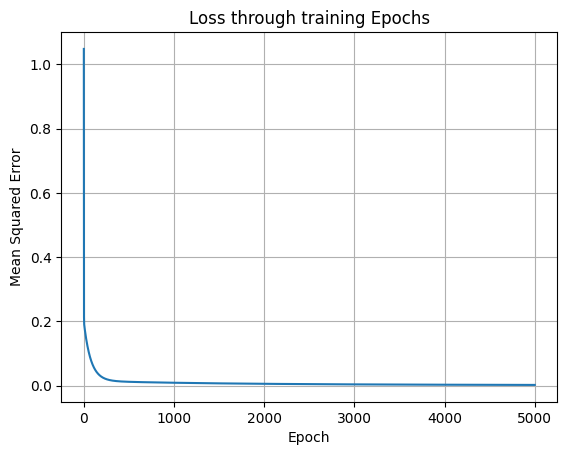
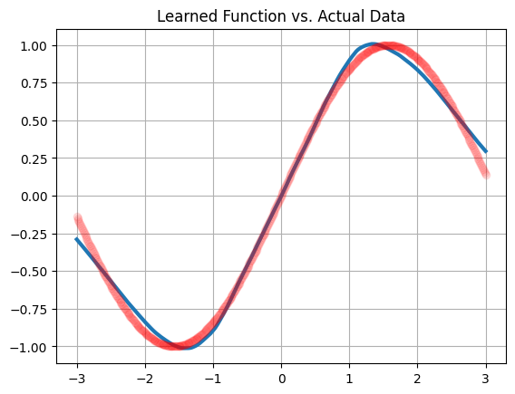
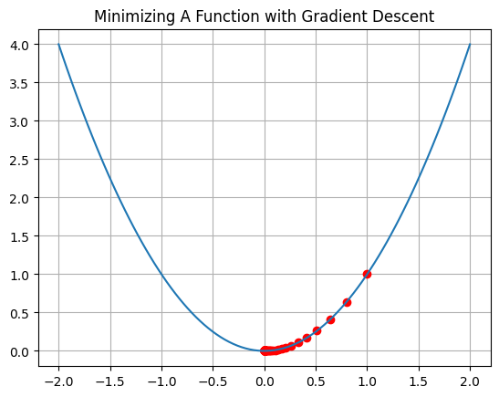
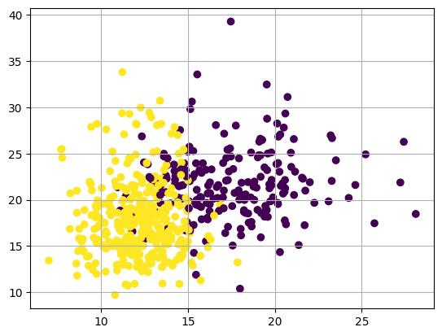

Introduction to Artificial Neural Networks#
OBJECTIVES
Understand connections between linear models and neural networks
Use
pytorchto build basic multilayer perceptron models for regression and classification
import torch
import torch.nn as nn
import torch.optim as optim
from torch.utils.data import TensorDataset, DataLoader
Please use the form here to discuss your time series problem and final project ideas.
Regression Revisited#
import seaborn as sns
import numpy as np
import matplotlib.pyplot as plt
def f(x): return torch.sin(x)
x = torch.linspace(-3, 3, 500)
plt.plot(x, f(x), 'o')
[<matplotlib.lines.Line2D at 0x15b7deed0>]

model = nn.Sequential(nn.Linear(1, 1000), nn.ReLU(), nn.Linear(1000, 1))
optimizer = optim.SGD(model.parameters(), lr = 0.001)
loss = nn.MSELoss()
x.unsqueeze(-1).shape
torch.Size([500, 1])
y = f(x)
x
tensor([-3.0000, -2.9880, -2.9760, -2.9639, -2.9519, -2.9399, -2.9279, -2.9158,
-2.9038, -2.8918, -2.8798, -2.8677, -2.8557, -2.8437, -2.8317, -2.8196,
-2.8076, -2.7956, -2.7836, -2.7715, -2.7595, -2.7475, -2.7355, -2.7234,
-2.7114, -2.6994, -2.6874, -2.6754, -2.6633, -2.6513, -2.6393, -2.6273,
-2.6152, -2.6032, -2.5912, -2.5792, -2.5671, -2.5551, -2.5431, -2.5311,
-2.5190, -2.5070, -2.4950, -2.4830, -2.4709, -2.4589, -2.4469, -2.4349,
-2.4228, -2.4108, -2.3988, -2.3868, -2.3747, -2.3627, -2.3507, -2.3387,
-2.3267, -2.3146, -2.3026, -2.2906, -2.2786, -2.2665, -2.2545, -2.2425,
-2.2305, -2.2184, -2.2064, -2.1944, -2.1824, -2.1703, -2.1583, -2.1463,
-2.1343, -2.1222, -2.1102, -2.0982, -2.0862, -2.0741, -2.0621, -2.0501,
-2.0381, -2.0261, -2.0140, -2.0020, -1.9900, -1.9780, -1.9659, -1.9539,
-1.9419, -1.9299, -1.9178, -1.9058, -1.8938, -1.8818, -1.8697, -1.8577,
-1.8457, -1.8337, -1.8216, -1.8096, -1.7976, -1.7856, -1.7735, -1.7615,
-1.7495, -1.7375, -1.7255, -1.7134, -1.7014, -1.6894, -1.6774, -1.6653,
-1.6533, -1.6413, -1.6293, -1.6172, -1.6052, -1.5932, -1.5812, -1.5691,
-1.5571, -1.5451, -1.5331, -1.5210, -1.5090, -1.4970, -1.4850, -1.4729,
-1.4609, -1.4489, -1.4369, -1.4248, -1.4128, -1.4008, -1.3888, -1.3768,
-1.3647, -1.3527, -1.3407, -1.3287, -1.3166, -1.3046, -1.2926, -1.2806,
-1.2685, -1.2565, -1.2445, -1.2325, -1.2204, -1.2084, -1.1964, -1.1844,
-1.1723, -1.1603, -1.1483, -1.1363, -1.1242, -1.1122, -1.1002, -1.0882,
-1.0762, -1.0641, -1.0521, -1.0401, -1.0281, -1.0160, -1.0040, -0.9920,
-0.9800, -0.9679, -0.9559, -0.9439, -0.9319, -0.9198, -0.9078, -0.8958,
-0.8838, -0.8717, -0.8597, -0.8477, -0.8357, -0.8236, -0.8116, -0.7996,
-0.7876, -0.7756, -0.7635, -0.7515, -0.7395, -0.7275, -0.7154, -0.7034,
-0.6914, -0.6794, -0.6673, -0.6553, -0.6433, -0.6313, -0.6192, -0.6072,
-0.5952, -0.5832, -0.5711, -0.5591, -0.5471, -0.5351, -0.5230, -0.5110,
-0.4990, -0.4870, -0.4750, -0.4629, -0.4509, -0.4389, -0.4269, -0.4148,
-0.4028, -0.3908, -0.3788, -0.3667, -0.3547, -0.3427, -0.3307, -0.3186,
-0.3066, -0.2946, -0.2826, -0.2705, -0.2585, -0.2465, -0.2345, -0.2224,
-0.2104, -0.1984, -0.1864, -0.1743, -0.1623, -0.1503, -0.1383, -0.1263,
-0.1142, -0.1022, -0.0902, -0.0782, -0.0661, -0.0541, -0.0421, -0.0301,
-0.0180, -0.0060, 0.0060, 0.0180, 0.0301, 0.0421, 0.0541, 0.0661,
0.0782, 0.0902, 0.1022, 0.1142, 0.1263, 0.1383, 0.1503, 0.1623,
0.1743, 0.1864, 0.1984, 0.2104, 0.2224, 0.2345, 0.2465, 0.2585,
0.2705, 0.2826, 0.2946, 0.3066, 0.3186, 0.3307, 0.3427, 0.3547,
0.3667, 0.3788, 0.3908, 0.4028, 0.4148, 0.4269, 0.4389, 0.4509,
0.4629, 0.4750, 0.4870, 0.4990, 0.5110, 0.5230, 0.5351, 0.5471,
0.5591, 0.5711, 0.5832, 0.5952, 0.6072, 0.6192, 0.6313, 0.6433,
0.6553, 0.6673, 0.6794, 0.6914, 0.7034, 0.7154, 0.7275, 0.7395,
0.7515, 0.7635, 0.7756, 0.7876, 0.7996, 0.8116, 0.8236, 0.8357,
0.8477, 0.8597, 0.8717, 0.8838, 0.8958, 0.9078, 0.9198, 0.9319,
0.9439, 0.9559, 0.9679, 0.9800, 0.9920, 1.0040, 1.0160, 1.0281,
1.0401, 1.0521, 1.0641, 1.0762, 1.0882, 1.1002, 1.1122, 1.1242,
1.1363, 1.1483, 1.1603, 1.1723, 1.1844, 1.1964, 1.2084, 1.2204,
1.2325, 1.2445, 1.2565, 1.2685, 1.2806, 1.2926, 1.3046, 1.3166,
1.3287, 1.3407, 1.3527, 1.3647, 1.3768, 1.3888, 1.4008, 1.4128,
1.4248, 1.4369, 1.4489, 1.4609, 1.4729, 1.4850, 1.4970, 1.5090,
1.5210, 1.5331, 1.5451, 1.5571, 1.5691, 1.5812, 1.5932, 1.6052,
1.6172, 1.6293, 1.6413, 1.6533, 1.6653, 1.6774, 1.6894, 1.7014,
1.7134, 1.7255, 1.7375, 1.7495, 1.7615, 1.7735, 1.7856, 1.7976,
1.8096, 1.8216, 1.8337, 1.8457, 1.8577, 1.8697, 1.8818, 1.8938,
1.9058, 1.9178, 1.9299, 1.9419, 1.9539, 1.9659, 1.9780, 1.9900,
2.0020, 2.0140, 2.0261, 2.0381, 2.0501, 2.0621, 2.0741, 2.0862,
2.0982, 2.1102, 2.1222, 2.1343, 2.1463, 2.1583, 2.1703, 2.1824,
2.1944, 2.2064, 2.2184, 2.2305, 2.2425, 2.2545, 2.2665, 2.2786,
2.2906, 2.3026, 2.3146, 2.3267, 2.3387, 2.3507, 2.3627, 2.3747,
2.3868, 2.3988, 2.4108, 2.4228, 2.4349, 2.4469, 2.4589, 2.4709,
2.4830, 2.4950, 2.5070, 2.5190, 2.5311, 2.5431, 2.5551, 2.5671,
2.5792, 2.5912, 2.6032, 2.6152, 2.6273, 2.6393, 2.6513, 2.6633,
2.6754, 2.6874, 2.6994, 2.7114, 2.7234, 2.7355, 2.7475, 2.7595,
2.7715, 2.7836, 2.7956, 2.8076, 2.8196, 2.8317, 2.8437, 2.8557,
2.8677, 2.8798, 2.8918, 2.9038, 2.9158, 2.9279, 2.9399, 2.9519,
2.9639, 2.9760, 2.9880, 3.0000])
model(x.unsqueeze(-1))[:5]
tensor([[0.5644],
[0.5644],
[0.5643],
[0.5643],
[0.5643]], grad_fn=<SliceBackward0>)
y.shape, yhat.shape, y.unsqueeze(-1).shape
(torch.Size([500]), torch.Size([569, 1]), torch.Size([500, 1]))
losses = []
for epoch in range(5000):
yhat = model(x.unsqueeze(-1))
loss_fn = loss(y.unsqueeze(-1), yhat)
optimizer.zero_grad()
loss_fn.backward()
optimizer.step()
losses.append(loss_fn.item())
yhat[:5]
tensor([[-0.2903],
[-0.2967],
[-0.3032],
[-0.3096],
[-0.3160]], grad_fn=<SliceBackward0>)
plt.plot(losses)
plt.title('Loss through training Epochs')
plt.xlabel('Epoch')
plt.ylabel('Mean Squared Error')
plt.grid();

plt.plot(x, model(x.unsqueeze(-1)).detach().numpy(), linewidth = 3)
plt.plot(x, y, 'ro', alpha = 0.1)
plt.title('Learned Function vs. Actual Data')
plt.grid();

What we see here is an example of the Universal Approximation Theorem and our first example of an artificial neural network. Wikipedia
Linear Models Revisited#
Recall our logistic regression model. We can think about this model as a linear function composed into the sigmoid function.

We also understodd the quality of the model minimizing a loss function – log loss. This is also called binary cross entropy, and the “best” model was the one whose parameters minimized the log loss or BCE. Together, we have two important ideas – a linear function and the goal of minimizing a loss function. Linear regression is a similar algorithm with a different loss function – Mean Squared Error.
Minimizing Functions#
x = torch.linspace(-2, 2, 100)
def f(x): return x**2
plt.plot(x, f(x));

def df(x): return 2*x
def tan_line(x, a): return df(a)*(x - a) + f(a)
plt.plot(x, f(x))
plt.plot(x, tan_line(x, 1), 'r')
plt.plot(1, f(1), 'ro')
plt.ylim(0, 4)
plt.grid();

x0 = 1
step_size = 0.1
x1 = x0 - step_size*df(x0)
x1
0.8
x2 = x1 - step_size*df(x1)
x2
0.64
xs = [x0]
for i in range(100):
xnext = xs[-1] - step_size*df(xs[-1])
xs.append(xnext)
xs = np.array(xs)
plt.plot(xs, f(xs), 'ro')
plt.plot(x, f(x))
plt.grid()
plt.title('Minimizing A Function with Gradient Descent');

A Visual Example#
from sklearn.datasets import load_breast_cancer
cancer = load_breast_cancer()
X, Y = cancer.data, cancer.target
plt.scatter(X[:, 0], X[:, 1], c=Y)
plt.grid();

l1 = nn.Linear(in_features=30, out_features = 100)
X = torch.tensor(X, dtype = torch.float32)
Y = torch.tensor(Y, dtype = torch.float32)
l1(X)[0]
tensor([ 23.6913, 79.8806, -264.8895, 86.6454, 184.6571, -478.5456,
-71.5017, -315.2294, -259.5677, -235.2671, 5.0943, 301.7432,
176.5565, -139.8545, 138.5058, -355.6392, -84.3386, -440.7909,
194.5602, -332.8313, -362.3071, 210.6747, 59.2030, 467.0563,
120.8150, 472.7196, 121.4425, -113.7389, -166.0539, -333.7622,
206.2944, -402.4569, 276.0428, -62.9335, -374.9991, -13.6699,
521.1909, -480.2935, 11.7878, -235.7927, 90.6675, 335.1009,
-238.4158, -236.5206, 120.4615, 61.8277, -107.8010, 143.2649,
260.4332, -96.2766, 335.5218, -109.6438, 5.9979, -413.1613,
229.7469, -150.1314, 462.1651, 413.3831, 207.9962, -89.5430,
-155.4217, 269.5447, 235.0949, -159.0285, 383.7048, -342.7009,
222.2795, 215.5688, -93.2076, -363.5149, 179.7176, -503.1702,
503.0753, -46.1244, 261.4064, 464.0982, 101.1189, -347.2296,
-114.1725, 135.8859, 300.3455, -78.6187, -56.4041, 215.1210,
264.3039, 87.5481, -95.1615, 151.4561, -382.9924, -199.1770,
268.5875, 154.7519, -102.0273, -407.3728, 237.0377, 2.5461,
-267.7597, 187.4090, 151.3568, -473.4008], grad_fn=<SelectBackward0>)
list(l1.parameters())
[Parameter containing:
tensor([[ 0.0461, 0.1466, 0.0335, ..., 0.0720, -0.0554, -0.1565],
[ 0.0602, -0.1323, 0.1103, ..., -0.0801, 0.1705, 0.0726],
[-0.0117, 0.1725, -0.0983, ..., -0.1214, 0.1722, 0.0522],
...,
[ 0.0923, 0.0484, -0.0076, ..., 0.1557, 0.0838, -0.1801],
[-0.1420, -0.0284, -0.1030, ..., -0.1816, 0.0290, 0.1678],
[ 0.1252, 0.0861, 0.0958, ..., 0.0466, -0.1793, 0.0086]],
requires_grad=True),
Parameter containing:
tensor([ 0.1819, 0.1250, 0.0368, 0.1341, 0.0254, 0.1350, -0.0618, 0.1179,
0.1283, -0.1765, -0.1070, -0.0900, -0.1737, -0.0711, 0.0129, -0.1362,
0.0964, -0.1204, -0.0918, -0.1818, -0.1104, 0.1630, 0.0734, 0.0911,
-0.0352, 0.0076, -0.0943, 0.0249, -0.0682, 0.0521, -0.1775, 0.1571,
0.1815, 0.1232, -0.0209, 0.0370, -0.1156, -0.1765, -0.1076, 0.0628,
0.0368, -0.0636, -0.1729, -0.0209, -0.0701, -0.1206, 0.0267, -0.0175,
0.0820, -0.1657, 0.0532, -0.1711, -0.0963, -0.0093, -0.0902, -0.0266,
0.0562, -0.0590, 0.0253, 0.0487, 0.0674, 0.0720, -0.1455, 0.1417,
-0.1587, -0.1146, -0.0635, 0.1267, 0.0461, -0.0227, 0.1131, 0.1196,
0.0335, -0.0124, -0.0988, -0.1798, -0.1212, -0.0733, 0.0082, 0.1759,
0.1023, 0.0179, 0.0209, -0.0358, -0.0372, 0.1521, -0.0330, 0.1103,
-0.1783, -0.1289, -0.0006, -0.1026, 0.1309, -0.1054, -0.1403, -0.0491,
-0.0216, 0.1532, -0.1346, -0.0359], requires_grad=True)]
activation = nn.ReLU()
output_1 = activation(l1(X))
l2 = nn.Linear(in_features=100, out_features=1)
output_2 = l2(output_1)
output_2[:10]
tensor([[15.7168],
[ 9.1403],
[ 8.6870],
[ 4.3181],
[ 7.4469],
[ 4.9296],
[ 8.3336],
[ 5.7261],
[ 4.4716],
[ 3.9067]], grad_fn=<SliceBackward0>)
output_activation = nn.Sigmoid()
yhat = output_activation(output_2)
yhat.shape
torch.Size([569, 1])
loss = nn.BCELoss()
loss(Y.unsqueeze(-1), yhat)
tensor(39.4904, grad_fn=<BinaryCrossEntropyBackward0>)
Training the Model#
Ingredients:
Model: We will build this with either
nn.Sequentialor by subclassing thenn.Module.Loss Function: Depending on the task this will be different
Regression is
nn.MSELossBinary classification is
nn.BCELossMulti-class classification is
nn.CrossEntropyLoss
Optimizer: Function to minimize the loss – today we will use
optim.SGD
model = nn.Sequential(nn.Linear(30, 100),
nn.ReLU(),
nn.Linear(100, 1),
nn.Sigmoid())
loss_fn = nn.BCELoss()
optimizer = optim.SGD(model.parameters(), lr = 0.05)
yhat = model(X)
loss = loss_fn(yhat, Y.unsqueeze(-1))
optimizer.zero_grad()
loss.backward()
optimizer.step()
X.shape
torch.Size([569, 30])
X = (X - X.mean())/X.std()
losses = []
for epoch in range(1000):
yhat = model(X)
loss = loss_fn(yhat, Y.unsqueeze(-1))
optimizer.zero_grad()
loss.backward()
optimizer.step()
losses.append(loss.item())
plt.plot(losses)
[<matplotlib.lines.Line2D at 0x15b828d40>]

Making Predictions#
The model returns probabilites that we need to use in order to make predictions.
yhat = model(X)
preds = torch.where(yhat > .5, 1, 0)
(preds.squeeze(-1) == Y).sum()/len(Y)
tensor(0.9227)
Example: Handwritten Digits#
Below, the handwritten digits data is loaded and transformed to torch.tensor objects. Recall these are 8 x 8 images of handwritten digits, and there are ten categories to predict.
from sklearn.datasets import load_digits
digits = load_digits()
X, y = digits.data, digits.target
X = (X - X.mean())/X.std()
X = torch.tensor(X, dtype = torch.float32)
Y = torch.tensor(y, dtype = torch.float32)
X.shape
torch.Size([1797, 64])
Problem#
Below, build a model with the following:
A Linear layer with 100 neurons
A ReLU activation on this layer
A Linear layer with another 100 neurons
A ReLU activation on this layer
A Linear output layer with 10 neurons
Use the optim.SGD to optimize the parameters of the model.
Use nn.CrossEntropyLoss as your loss function for multiclass classification.
model = ''
optimizer = ''
loss_fn = ''
from tqdm import tqdm
def train_function(model, X, Y, epochs, optimizer, loss_fn, losses = []):
'''
The function trains a pytorch model given a model,
number of training epochs, optimizer, and loss function.
It returns a list of losses from training.
'''
for epoch in tqdm(range(epochs)):
yhat = model(X)
loss = loss_fn(yhat, Y.unsqueeze(-1))
optimizer.zero_grad()
loss.backward()
optimizer.step()
losses.append(loss.item())
return losses
train_function(model, X, Y, epochs = 1000, optimizer = optimizer, loss_fn = loss_fn)
0%| | 0/1000 [00:00<?, ?it/s]
---------------------------------------------------------------------------
TypeError Traceback (most recent call last)
Cell In[377], line 1
----> 1 losses = train_function(model, 1000, optimizer, loss_fn)
Cell In[376], line 3, in train_function(model, epochs, optimizer, loss_fn, losses)
1 def train_function(model, epochs, optimizer, loss_fn, losses = []):
2 for epoch in tqdm(range(1000)):
----> 3 yhat = model(X)
4 loss = loss_fn(yhat, Y.unsqueeze(-1))
5 optimizer.zero_grad()
TypeError: 'str' object is not callable
yhat = model(X)
predictions = torch.argmax(yhat)
sum(predictions == Y)/len(Y)